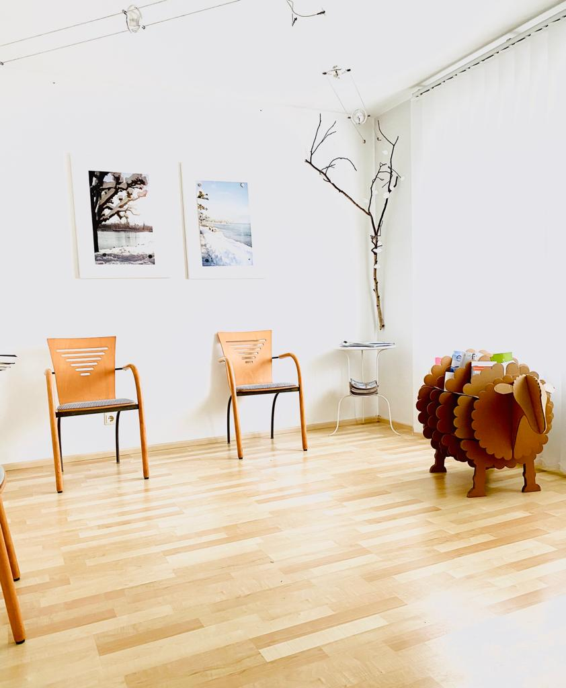

Kontakti & Vendndodhja
Informacioni i Kontaktit
Ju mund të na kontaktoni me telefon gjatë orarit tonë të punës. Përndryshe, ju lutemi ndjehuni të lirë të na dërgoni një email.
- Adresa: Adenauerstrasse 8, 78465 Konstanz, Gjermani
- Telefoni: +49 (0) 7531 – 44569
- Faks: +49 (0) 7531 – 943173
- E-Mail: info@praxiskushta.de
Orari i Punës
- E Hënë:
07:45 - 12:00 / 15:45 - 18:00 - E Martë:
07:45 - 12:00 / 15:45 - 18:00 - E Mërkurë:
07:45 - 12:00 / 15:45 - 18:00 - E Enjte:
Vaksinime - E Premte:
07:45 - 12:00 / 15:45 - 18:00 - E Shtunë & E Dielë:
Mbyllur
Shënim: Në rast të urgjencave kërcënuese për jetën, ju lutemi telefononi menjëherë shërbimet e urgjencës në 112! Për ndihmë mjekësore jashtë orarit të punës, ju lutemi telefononi shërbimin mjekësor kujdestar në 116 117.
